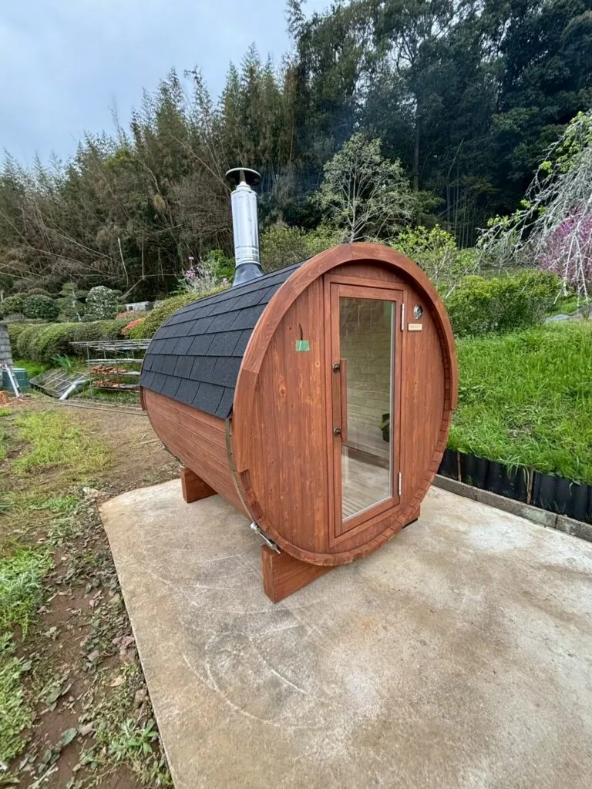
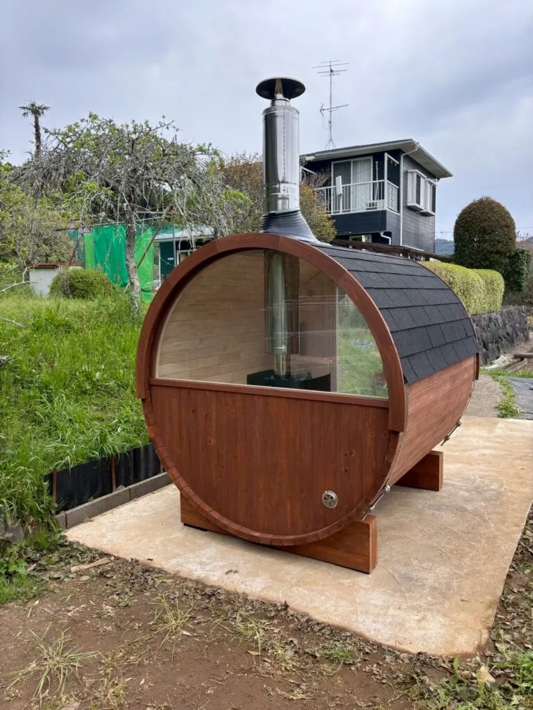
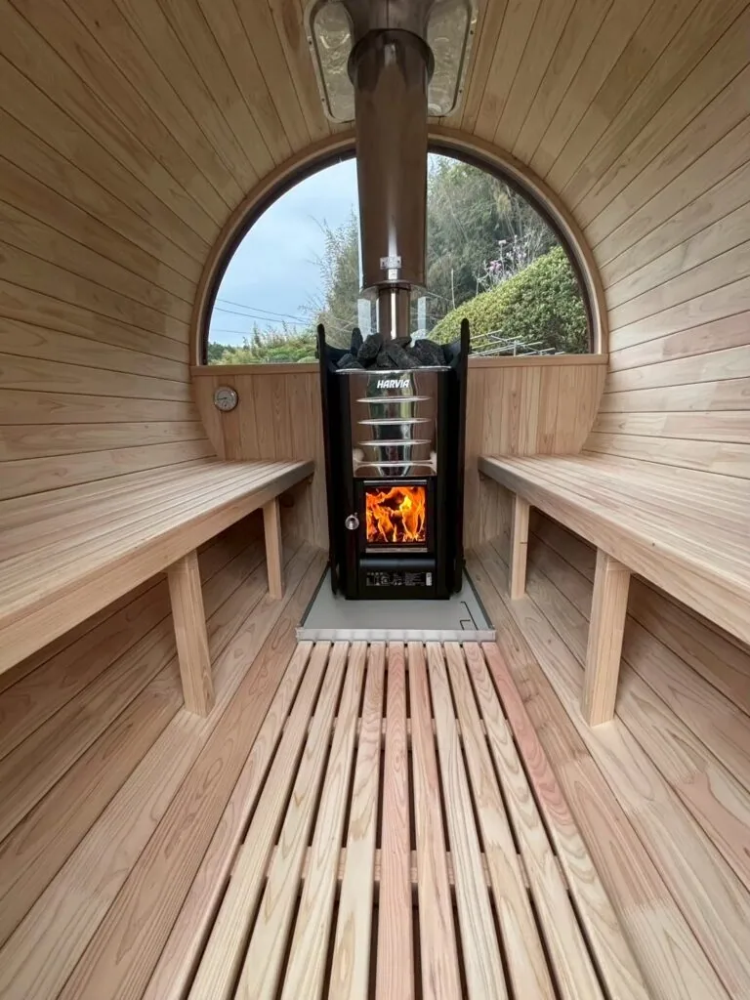

「前からプライベートサウナが欲しいと思っていて。まとまったお金が入ったタイミングで、思い切ってバレルサウナに決めました」
そう語ってくださったのは、千葉県のご自宅のお庭にバレルサウナを導入されたK様です。
以前はゴルフ場の併設施設などで頻繁にサウナを楽しまれていましたが、コロナ禍をきっかけに足が遠のきました。
それでも、「自宅で気兼ねなく入れるサウナが欲しい」という思いは、長年心の中に残り続けていたそうです。
本記事では、手軽なテントサウナの検討から、本格的なバレルサウナをご自宅に迎えるまでの経緯をご紹介します。
こだわりの薪ストーブを使ったご夫婦での楽しみ方や、導入後の暮らしの変化について詳しくお話を伺いました。
| 導入者 | K様 |
|---|---|
| 設置場所 | 千葉県 |
| 導入モデル | i-barrel Small-Long R18 |
| オプション | パノラマ窓 |
| 熱源 | 薪ストーブ（M3） |
| 施工方法 | 現地組み立て |
| 用途 | 個人利用（ご夫婦） |
なぜバレルサウナだったのか？
コロナ禍をきっかけに自宅サウナを検討
K様は以前、ゴルフ場を訪れた際などに、併設されている施設で頻繁にサウナを楽しまれていました。
しかし、コロナ禍以降は感染対策などで施設のサウナが休止になることが増え、徐々にサウナそのものから足が遠のいてしまったと言います。
それでも、「いつか自宅の庭に、自分だけのプライベートサウナが欲しい」という憧れは、ずっと胸の内に抱き続けていらっしゃいました。
テントサウナから本格的なバレルサウナへ
それから数年が経ち、再びサウナへの情熱が高まったK様は、「テントサウナなら、手頃な価格ですぐに始められるのではないか」と考え、具体的な検討を始めました。
ちょうどその頃、生活の中で資金的な余裕が生まれるタイミングが重なり、状況が一変します。
「どうせ自宅に置くのであれば、妥協してテントサウナにするよりも、ずっと憧れていた本格的なバレルサウナを思い切って建てよう」
そう決意を固めたK様は、過去の経験も踏まえながら、改めて理想のサウナ探しをスタートさせました。
過去の見積もりで感じた費用面の不安
実は数年前、インターネット広告で見かけた安価なバレルサウナに惹かれ、メーカーへ問い合わせた経験がありました。
しかし、実際に見積もりを依頼すると、広告に記載されていたのは「本体のみ」の価格でした。
現地での組み立て費用、熱源となるヒーター代、雨風をしのぐための屋根の施工費などを加えると、金額は当初の想定を大きく上回りました。
そのときは予算の都合から、導入を断念せざるを得なかったそうです。
Rink SAUNAを選ばれた決め手
K様が重視した3つの条件
- 純国産ヒノキを使用していること
- 導入に必要な費用が分かりやすいこと
- 製造から施工まで一貫して対応できること
純国産ヒノキという素材
数あるバレルサウナメーカーの中からRink SAUNAに興味を持ったきっかけは、周囲の知人からのアドバイスでした。
「せっかく庭に建てるなら、素材は絶対にヒノキがいいんじゃないか」
この言葉をきっかけに、K様はヒノキ材を使用した製品を中心に探し始めたと言います。
Rink SAUNAは、日本の気候を考慮して設計された、純国産ヒノキのバレルサウナブランドです。
K様は、ヒノキ特有の香りや美しい木目、長く使うことを見据えた耐久性に魅力を感じてくださいました。
分かりやすい費用と一貫したサポート
過去の検討時にK様を悩ませた、費用の不透明さを解消できたことも、大きな決め手となりました。
Rink SAUNAでは、木材の調達から製造、配送、施工までを一貫して管理しています。
導入に必要な内容を分かりやすく確認でき、現地組み立てを含むサポート体制も整っていたことで、今回は安心して導入へ踏み切ることができました。
導入時のエピソード
奥行きのある4名向けモデルを選択
今回お選びいただいたモデルは、奥行きがあり、ゆったりと座れる4名向けの「i-barrel Small-Long R18」です。
自然豊かな千葉県のご自宅のお庭に、職人が伺い、現地で丁寧に組み立て施工を行いました。
本格的な薪ストーブを採用
熱源には、本格的なサウナ体験を楽しめる「薪ストーブ（M3）」を選択されました。
薪ストーブは火を扱うため、周囲の安全距離や足元のスペースを広めに確保する必要があります。
そのため、カタログ上は4名向けのモデルですが、大きな薪ストーブを設置した状態では、ご夫婦2名でゆったりと使うのが心地よいサイズ感だったとのことです。
庭の緑を楽しめるパノラマ窓
オプションとして、背面の半分をガラスにするパノラマ窓も追加されました。
パノラマ窓がお庭の美しい緑を絵画のように切り取り、純国産ヒノキの重厚感に開放感を加えています。
ご自宅の景観に自然と馴染む、上質な佇まいのサウナが完成しました。

導入後の変化
導入後の楽しみ方
- 設置直後は週3〜4回の頻度で利用
- 室温は60〜70℃程度に調整
- ご夫婦2名でゆったり利用
念願の本格バレルサウナが完成し、K様の暮らしには、さっそく新しい楽しみが加わりました。
設置直後のゴールデンウィーク中は、ご自宅で過ごす時間が長かったこともあり、週に3〜4回という高い頻度でサウナに火を入れ、存分に楽しまれたそうです。
温度と湿度を自分好みに調整
K様が特に気に入っているのは、薪ストーブならではの熱を活かし、温度と湿度を自分好みに調整する楽しみ方です。
薪を多く燃やせば室温はすぐに上がりますが、K様はあえて室温を60〜70℃程度に落ち着かせ、柔らかな熱を保つのがお好みとのこと。
室内がじっくりと温まった状態でたっぷりとロウリュを行うと、一気に蒸気が広がり、体感温度が上昇します。
「もういられないくらい熱くなる」
ご自宅にいながら、ご自身の好みに合わせた本格的なサウナ体験を楽しんでいらっしゃいます。
パノラマ窓から庭の景色を楽しむ
オプションで採用したパノラマ窓も、K様にご満足いただいています。
窓には、熱への安全性に配慮した複層強化ガラスを使用しています。
高い保温性を備えた構造と組み合わせることで、外の冷気の影響を抑えながら、一年を通じて快適に過ごせるサウナ空間を目指しています。
揺らぐ炎の音とヒノキのぬくもりに包まれながら、ご夫婦でパノラマ窓からの景色を眺める時間は、日常から離れてリラックスできる特別なひとときです。
「まだ設置して1か月なので、健康面での大きな変化は分かりませんが、本当にリラックスできていて、満足しています」
長年の夢だったプライベートサウナは、ご夫婦の暮らしをより豊かにする設備として、早くも日常に溶け込んでいます。

まとめ
手軽なテントサウナの検討から一歩踏み出し、純国産ヒノキの本格的なバレルサウナをご自宅に迎えたK様の事例をご紹介しました。
過去に費用面の不安から導入を断念した経験を乗り越え、周囲のアドバイスも参考にしながら、日本の気候を考慮した純国産ヒノキのサウナを選ばれました。
薪ストーブの熱を自分好みに調整し、パノラマ窓から庭の景色を眺める時間は、プライベートサウナだからこそ味わえる楽しみです。
ご夫婦の休日を彩る特別な場所として、これからもRink SAUNAを末永くご愛用いただけることを願っております。